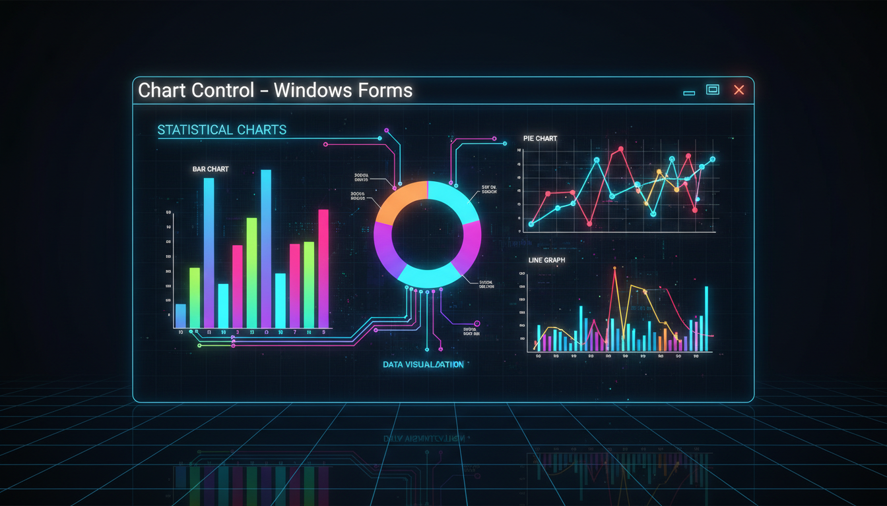

Стовпчасті, кругові, лінійні діаграми

using namespace System::Windows::Forms::DataVisualization::Charting;
Chart^ chart = gcnew Chart();
chart->Size = Size(600, 400);
// Область діаграми
ChartArea^ area = gcnew ChartArea("MainArea");
area->AxisX->Title = "Місяці";
area->AxisY->Title = "Продажі";
chart->ChartAreas->Add(area);
// Серія даних (стовпчаста)
Series^ series = gcnew Series("Продажі");
series->ChartType = SeriesChartType::Column;
series->Points->AddXY("Січ", 100);
series->Points->AddXY("Лют", 150);
series->Points->AddXY("Бер", 120);
series->Points->AddXY("Кві", 200);
series->Points->AddXY("Тра", 180);
chart->Series->Add(series);
// Кругова діаграма
Series^ pie = gcnew Series("Розподіл");
pie->ChartType = SeriesChartType::Pie;
pie->Points->AddXY("A", 30);
pie->Points->AddXY("B", 45);
pie->Points->AddXY("C", 25);
chart->Series->Add(pie);
// Легенда
Legend^ legend = gcnew Legend();
chart->Legends->Add(legend);